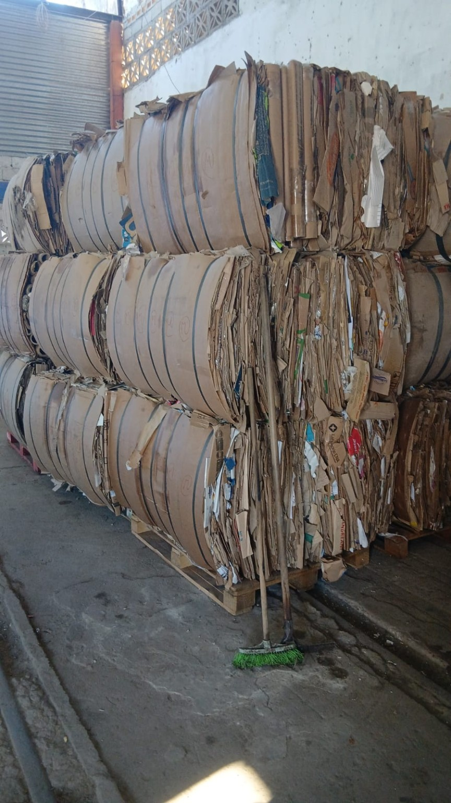
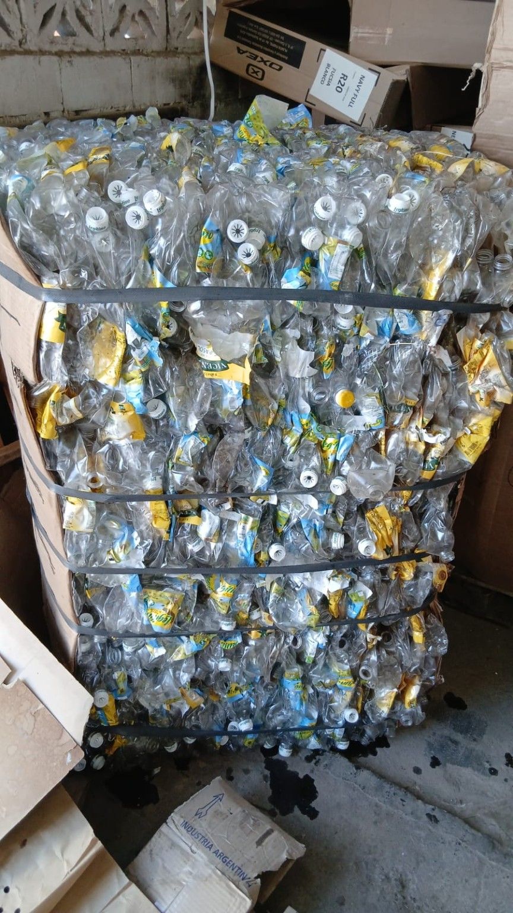
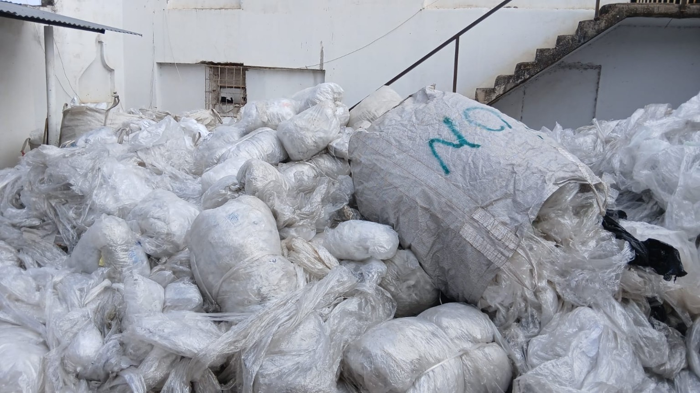
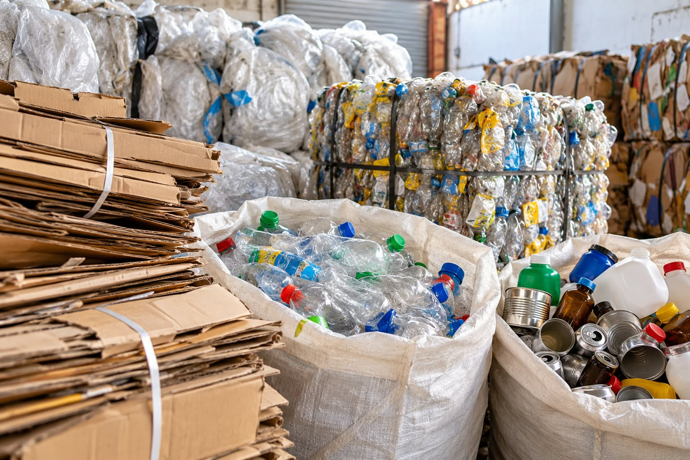

Materiales reciclables
Trabajamos en la recuperación y clasificación de materiales que pueden volver a incorporarse a los circuitos de reciclaje.

Cartón y papel
Recuperamos cartón y papel para su clasificación, acondicionamiento y posterior aprovechamiento.

Plásticos
Clasificamos plásticos recuperados para facilitar su acondicionamiento y reciclaje.

Film
Recuperamos film plástico y lo separamos para facilitar su manejo y aprovechamiento.

Otros materiales
¿Tenés otros materiales reciclables? Estamos abiertos a evaluar nuevas alternativas y propuestas.
Consultar¿Cómo trabajamos?
1. Recuperación
Reunimos materiales recuperables mediante las actividades y los operativos en los que participamos.
2. Clasificación
Separamos los materiales según sus características para facilitar su aprovechamiento.
3. Acondicionamiento
Preparamos los materiales para facilitar su almacenamiento y posterior entrega a los circuitos de reciclaje.
Compromiso con el ambiente
La recuperación de materiales contribuye a reducir los residuos descartados y promueve la economía circular.
La separación en origen y la participación de la comunidad son fundamentales para fortalecer el reciclaje.
Conocé nuestra cooperativa
Descubrí nuestra historia y el trabajo que desarrollamos en la comunidad.
Conocé quiénes somos